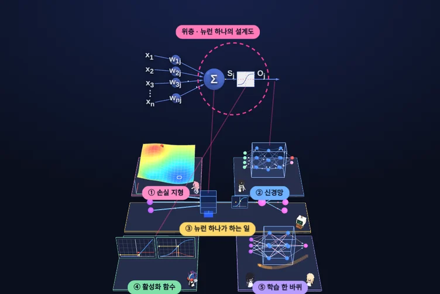

그림으로만 보던 AI의 원리를 3D 판 위에 올렸습니다. 돌려 보고, 값을 바꿔 보고, 연구실 식구들의 안내를 따라가면 됩니다.
글 · 안상선 ((주)M-Robo 대표)

손실을 줄이는 공 굴리기부터 뉴런 하나의 계산, 작은 신경망이 실제로 배우는 한 바퀴까지.
데이터를 조금씩만 보고 내려가면 왜 싸고, 왜 흔들리고, 그래도 왜 도착하는지.
접선 두 개와 법선 하나로, 공이 그 방향으로 가는 이유를 봅니다.